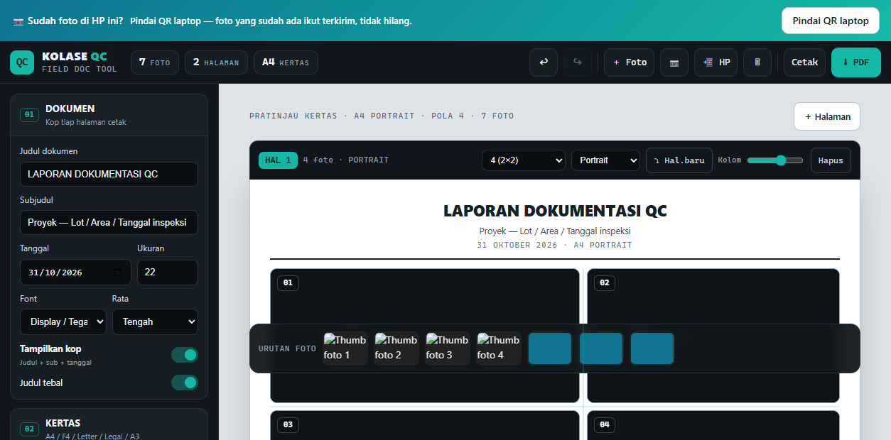
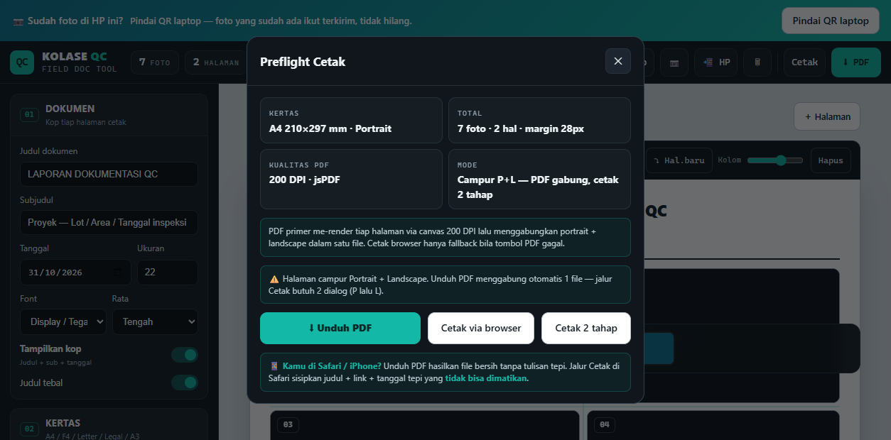

KOLASE QC — Hasil Redesign
Field Doc Tool · visual OpenDesign + fitur penuh · 31 Okt 2026
1 · Tampilan utama
Topbar ramping (metric + grup aksi), panel bernomor 01–04, kanvas terang fokus kertas putih, kop display uppercase, slot + filmstrip thumbnail.
2 · Modal Preflight Cetak
Kartu kertas / total / kualitas / mode, tombol Unduh PDF + Cetak via browser + Cetak 2 tahap, hint campur P+L, safari note.